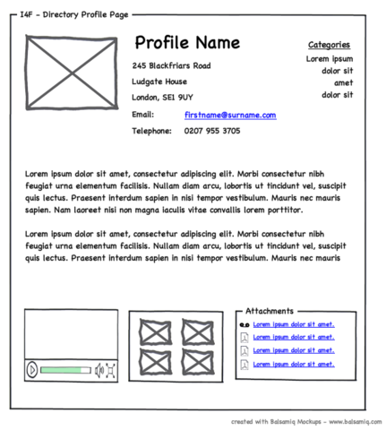

Coding Basics
CSS for Layout
Today we'll learn about...
- the box model in CSS
- applying borders and margins to HTML elements
- how to position elements on your page
- HTML block and inline elements
What is page layout?
BOXES!
The Box Model

CODE BREAK
Apply styles to your page. Focus on border, margin, padding. Notice if your elements are display: block or display:inline. Experiment to see what happens when you set or change style properties.
Reference: CSS-Tricks properties list
CSS Layout: Floats
See the Pen Playable code by Amy Gori (@amygori) on CodePen.
CSS Floats: Behavior
See the Pen CSS Floats 101 by Amy Gori (@amygori) on CodePen.
CSS Floats: Practical Layout Example
See the Pen 2-column layout with floats by Amy Gori (@amygori) on CodePen.
Centering Elements
To center an element on a page, or inside its containing element, you can set its left-margin and right-margin to auto.
div.centered {
margin: 0 auto;
}
CODE BREAK
Arrange your HTML page's layout using height, width, margins, and floats.